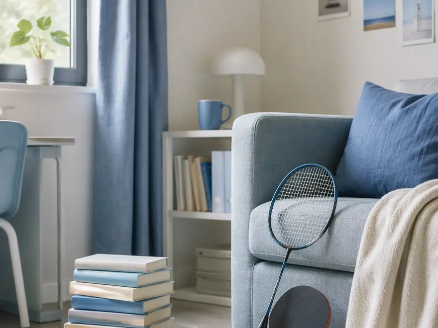
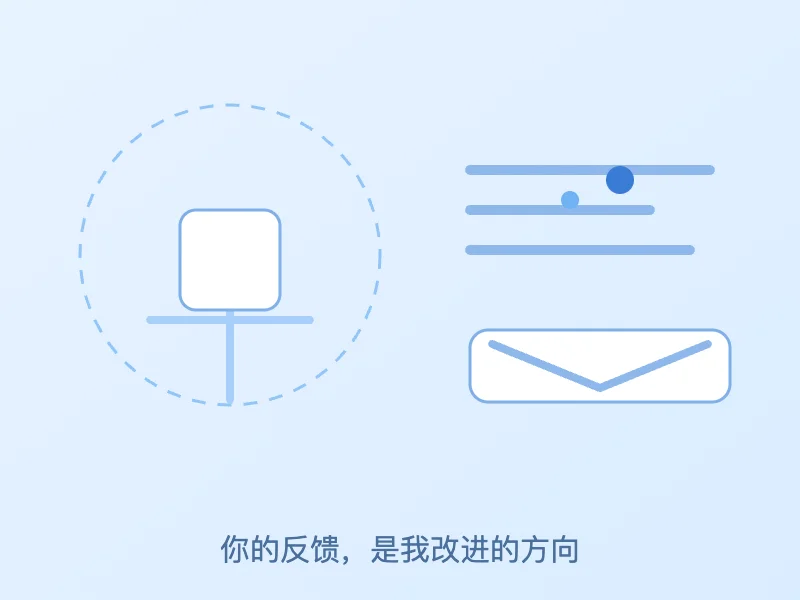

天津大学 · 智能医学工程
你好，我是 刘一鸣
把复杂问题简单化 —— 点击启动，进入我的主页。
启 动
点击按钮，或按 Enter 键进入
刘
刘一鸣
关于我
技能
学习目标
联系方式
数字分身
反馈
↑
刘
一
鸣
🎓 天津大学 · 智能医学工程
把复杂问题简单化 · 大学生
你好呀，欢迎来到我的主页 👋
下方可以和我聊聊，这是我的"数字分身"。
🤖 和数字分身聊聊
看看我的技能
👋
关于我

自我介绍
待补充
性格
待补充
兴趣爱好
🏸 羽毛球
🏓 乒乓球
📚 阅读
💻
技能
编程
正在学习的基础技能
熟练程度 · 待补充
英语
正在学习的基础技能
熟练程度 · 待补充
🎯
学习记录 / 目标
学习目标
待补充
学习记录
待补充
✉️
联系方式
📧
邮箱
3026445032@tju.edu.cn
📞
电话
19582446693
🔗
其他
待补充
🤖
数字分身 · 聊聊天
AI 数字分身
在线 · 代表刘一鸣回答
↺ 重新开始
你是谁
你在干什么
你的特点
你的兴趣
你的学校专业
你的技能
你的学习目标
怎么联系你
向数字分身提问
发送
💬
访客反馈
无需登录 · 30 秒即可提交

你和我的关系
*
朋友
同学
老师
亲戚
潜在合作伙伴
其他访客
反馈类型
💡 建议
❓ 问题
🤝 想认识 / 合作
🌟 夸奖鼓励
其他
你当前使用的设备
*
📱 手机端
💻 电脑端
你的反馈
*
怎么称呼你（选填）
想收到回复？留个联系方式（选填）
页面体验（选填，点击星星）
☆
☆
☆
☆
☆
✉️ 提交反馈
提交即表示你已阅读以下说明：仅收集你主动填写的少量信息（称呼 / 联系方式可选），用于作者阅读与回复；不收集敏感隐私。
🔐 查看反馈（作者）
仅作者可见，需口令
访问口令
解锁
↻ 刷新